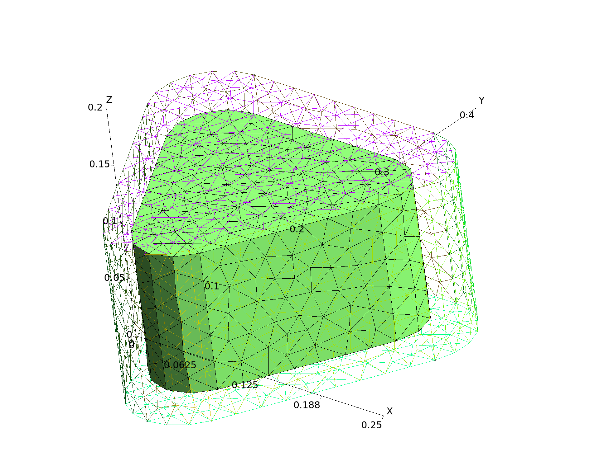
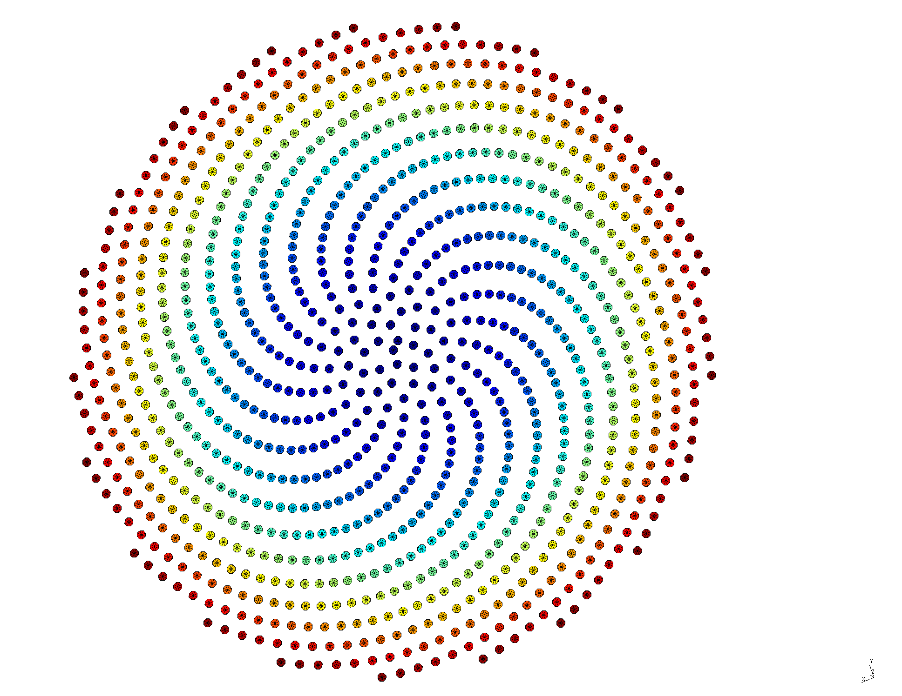
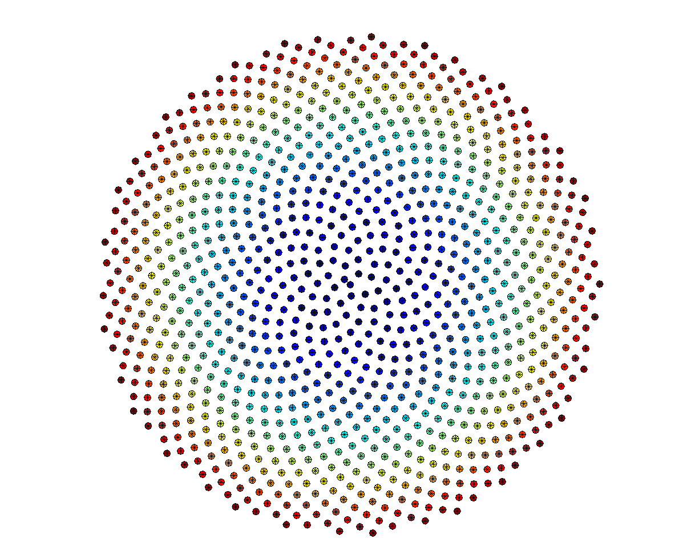
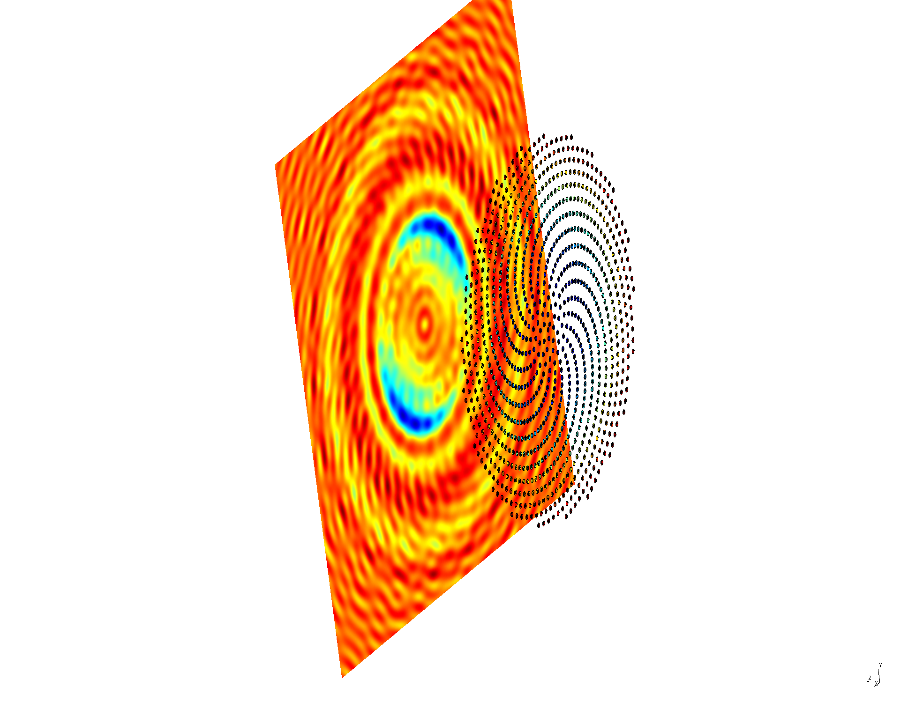
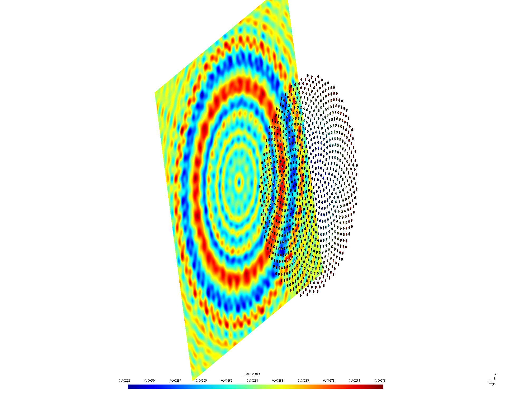
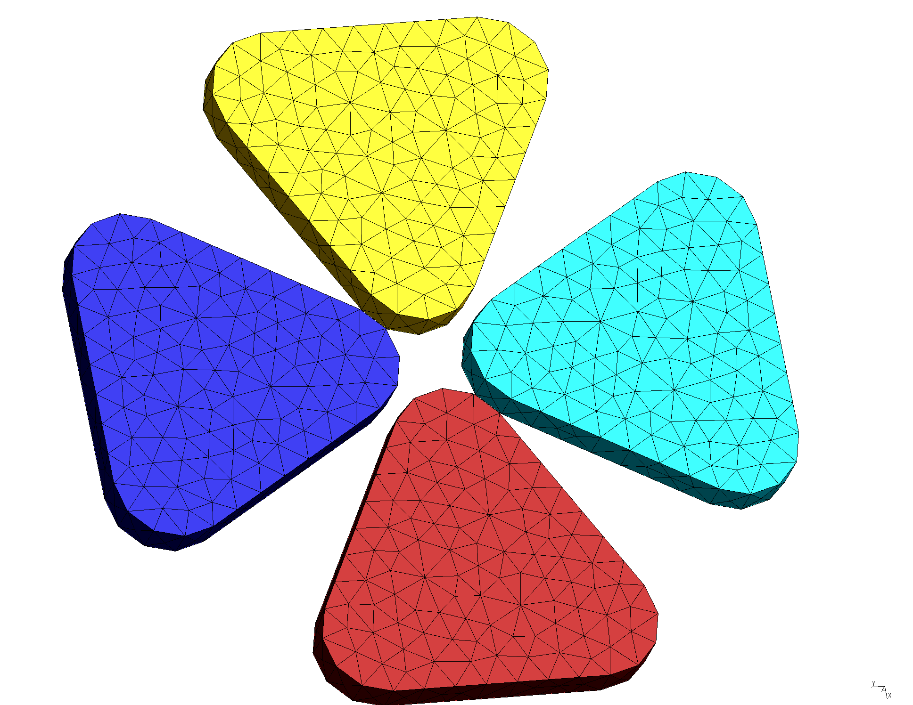
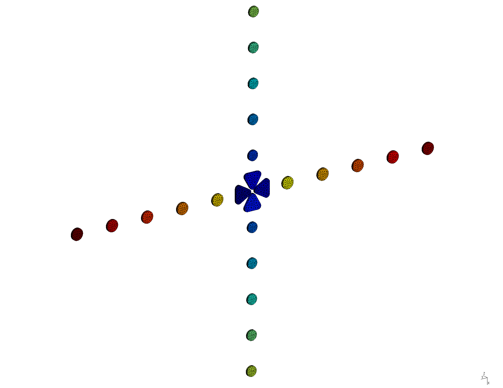
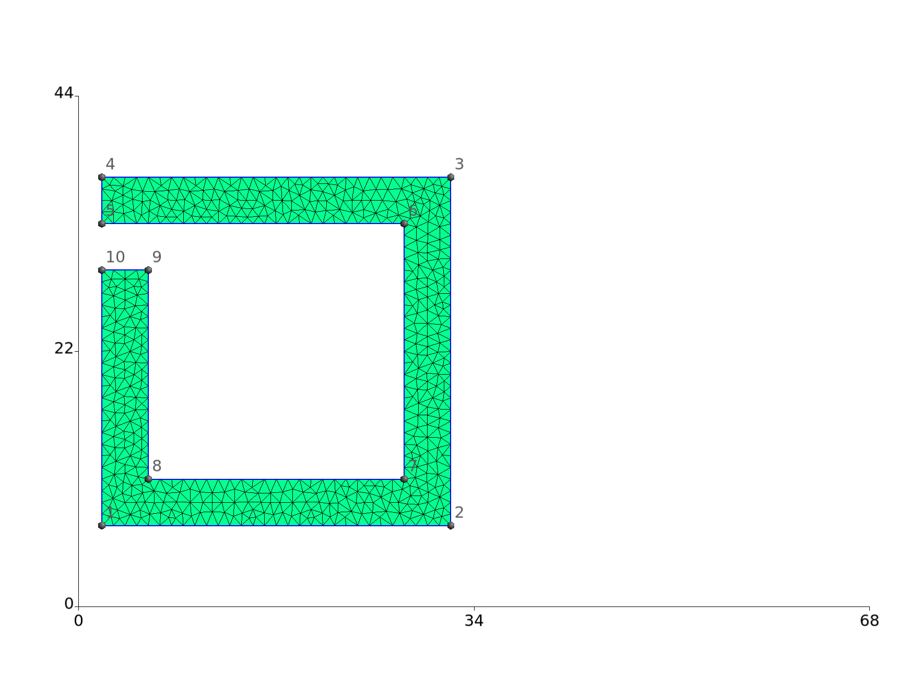
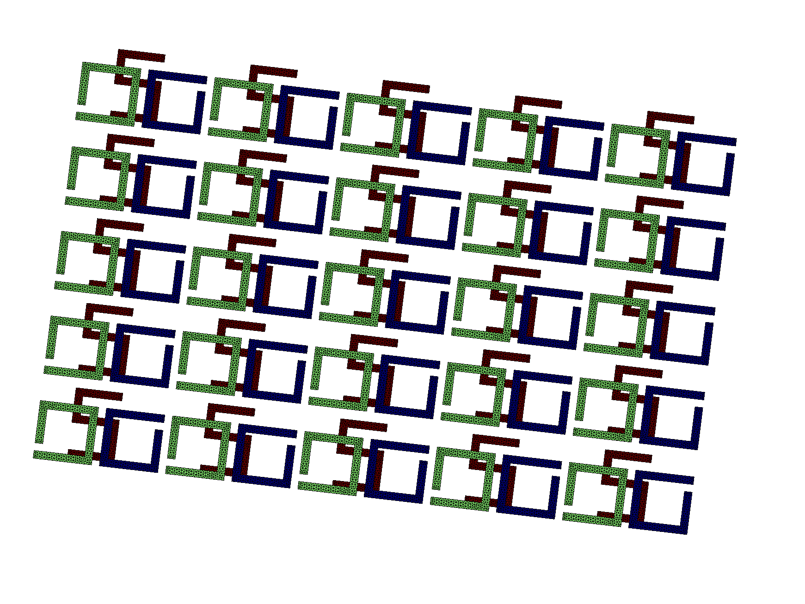
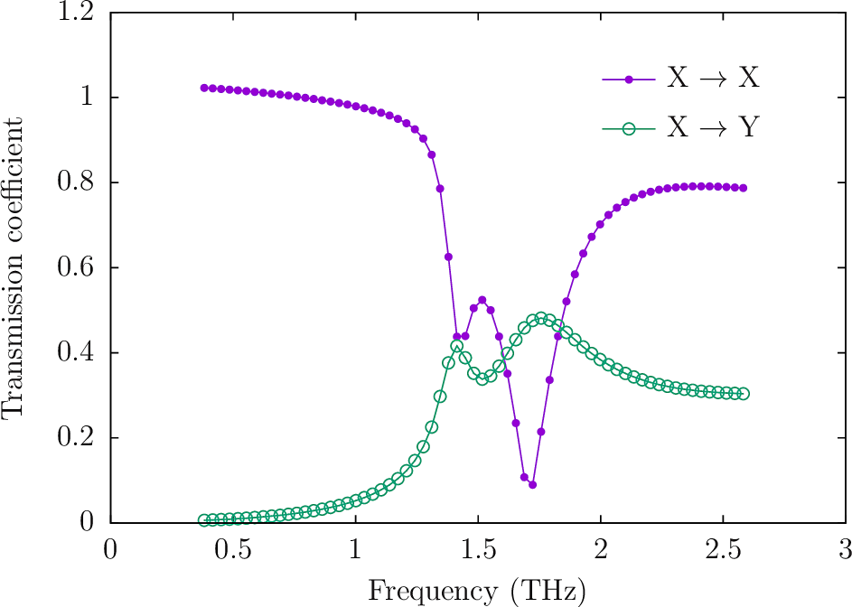

BU Symposium on Open-Source CAD Tools, 10/25/2016
Outline and Agenda
Image gallery
Overview of Integral-Equation Methods and Introduction to SCUFF-EM
Integral-equation approaches to electromagnetic scattering
Introduction to SCUFF-EM
SCUFF-EM computations in the cloud
First calculation: Mie scattering
Tutorial walkthrough 1 Plasmonics and nanoantennas
Scattering and absorption by plasmonic nanoparticles
LDOS and field concentration at the hotspot of a bowtie antenna
Polarization-sensitive antennas
Tutorial walkthrough 2 Diffraction and transmission
Diffraction patterns of periodic screens and particle arrays
Diffraction patterns of aperiodic particle arrays
Polarization-rotated transmission through a chiral metasurface
BU Symposium on Open-Source CAD Tools, 10/25/2016
scuff-em
for photonics
»
Image gallery
Edit on GitHub
Image gallery
Gold-coated SiO2 nanotriangle

Coarsely-meshed nanodisc
Vogel spiral of nanodiscs (type A1)

Vogel spiral of nanodiscs (type G)

A1 spiral diffraction pattern

G spiral diffraction pattern

Bowtie antenna

Field amplification at hotspot vs. incident polarization
Bowtie antenna surrounded by disc arrays with

Field amplification at hotspot vs. incident polarization
Asymmetric split-ring resonator

[
Polarization-rotating chiral metasurface
]

[
Rotation of plane-wave polarization upon passage through metasurface
]

GitHub
« Previous
Next »